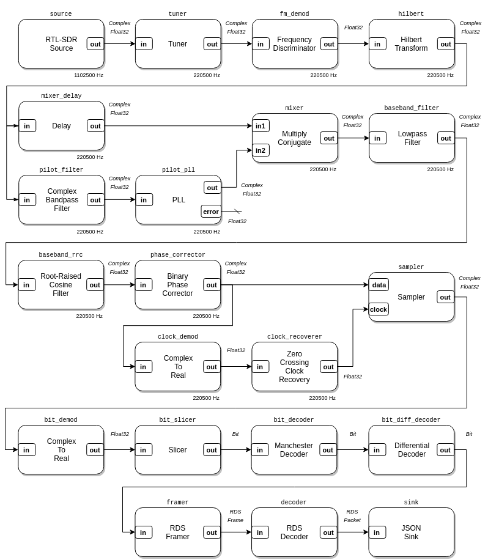

rtlsdr_rds.luaThis example is a Radio Data System (RDS) receiver. RDS is a digital protocol used by FM Broadcast radio stations to transmit metadata about the station and its programming. This protocol is most commonly known for providing station and song text information with “RadioText” messages. This examples uses the RTL-SDR as an SDR source, writes decoded RDS frames in JSON to standard out, and shows three real-time plots: the demodulated FM spectrum, the BPSK spectrum, and the BPSK constellation.
This example can be used with FM Broadcast radio stations, like the WBFM Mono and WBFM Stereo examples.
This RDS receiver composition is available in LuaRadio as the
RDSReceiver block.

local radio = require('radio')
if #arg < 1 then
io.stderr:write("Usage: " .. arg[0] .. " <FM radio frequency>\n")
os.exit(1)
end
local frequency = tonumber(arg[1])
local tune_offset = -250e3
-- Blocks
local source = radio.RtlSdrSource(frequency + tune_offset, 1102500)
local tuner = radio.TunerBlock(tune_offset, 200e3, 5)
local fm_demod = radio.FrequencyDiscriminatorBlock(1.25)
local hilbert = radio.HilbertTransformBlock(129)
local mixer_delay = radio.DelayBlock(129)
local pilot_filter = radio.ComplexBandpassFilterBlock(129, {18e3, 20e3})
local pll_baseband = radio.PLLBlock(1500.0, 19e3-100, 19e3+100, 3.0)
local mixer = radio.MultiplyConjugateBlock()
local baseband_filter = radio.LowpassFilterBlock(128, 4e3)
local baseband_rrc = radio.RootRaisedCosineFilterBlock(101, 1, 1187.5)
local phase_corrector = radio.BinaryPhaseCorrectorBlock(8000)
local clock_demod = radio.ComplexToRealBlock()
local clock_recoverer = radio.ZeroCrossingClockRecoveryBlock(1187.5*2)
local sampler = radio.SamplerBlock()
local bit_demod = radio.ComplexToRealBlock()
local bit_slicer = radio.SlicerBlock()
local bit_decoder = radio.ManchesterDecoderBlock()
local bit_diff_decoder = radio.DifferentialDecoderBlock()
local framer = radio.RDSFramerBlock()
local decoder = radio.RDSDecoderBlock()
local sink = radio.JSONSink()
-- Plotting sinks
local plot1 = radio.GnuplotSpectrumSink(2048, 'Demodulated FM Spectrum', {yrange = {-120, -40}})
local plot2 = radio.GnuplotSpectrumSink(2048, 'BPSK Spectrum', {yrange = {-130, -60},
xrange = {-8000, 8000}})
local plot3 = radio.GnuplotXYPlotSink(1024, 'BPSK Constellation', {complex = true,
yrange = {-0.02, 0.02},
xrange = {-0.02, 0.02}})
-- Connections
local top = radio.CompositeBlock()
top:connect(source, tuner, fm_demod, hilbert, mixer_delay)
top:connect(hilbert, pilot_filter, pll_baseband)
top:connect(mixer_delay, 'out', mixer, 'in1')
top:connect(pll_baseband, 'out', mixer, 'in2')
top:connect(mixer, baseband_filter, baseband_rrc, phase_corrector)
top:connect(phase_corrector, clock_demod, clock_recoverer)
top:connect(phase_corrector, 'out', sampler, 'data')
top:connect(clock_recoverer, 'out', sampler, 'clock')
top:connect(sampler, bit_demod, bit_slicer, bit_decoder, bit_diff_decoder, framer, decoder, sink)
if os.getenv('DISPLAY') then
top:connect(fm_demod, plot1)
top:connect(baseband_rrc, plot2)
top:connect(sampler, plot3)
end
top:run()
Usage: examples/rtlsdr_rds.lua <FM radio frequency>
Running this example in a headless environment will inhibit plotting.
Receive RDS on 88.5 MHz:
$ ./luaradio examples/rtlsdr_rds.lua 88.5e6
{"header":{"pi_code":15019,"tp_code":0,"group_code":0,"group_version":0,"pty_code":22},"data":{"text_data":" ","di_position":0,"text_address":3,"ms_code":1,"di_value":1,"af_code":[6,8],"type":"basictuning","ta_code":0}}
{"header":{"pi_code":15019,"tp_code":0,"group_code":2,"group_version":0,"pty_code":22},"data":{"type":"radiotext","text_data":"Nort","text_address":6,"ab_flag":0}}
{"header":{"pi_code":15019,"tp_code":0,"group_code":0,"group_version":0,"pty_code":22},"data":{"text_data":"KQ","di_position":3,"text_address":0,"ms_code":1,"di_value":0,"af_code":[227,10],"type":"basictuning","ta_code":0}}
{"header":{"pi_code":15019,"tp_code":0,"group_code":2,"group_version":0,"pty_code":22},"data":{"type":"radiotext","text_data":"hern","text_address":7,"ab_flag":0}}
{"header":{"pi_code":15019,"tp_code":0,"group_code":0,"group_version":0,"pty_code":22},"data":{"text_data":"ED","di_position":2,"text_address":1,"ms_code":1,"di_value":0,"af_code":[6,8],"type":"basictuning","ta_code":0}}
{"header":{"pi_code":15019,"tp_code":0,"group_code":1,"group_version":0,"pty_code":22},"data":{"type":"raw","frame":[15019,4805,160,2002]}}
{"header":{"pi_code":15019,"tp_code":0,"group_code":0,"group_version":0,"pty_code":22},"data":{"text_data":" ","di_position":1,"text_address":2,"ms_code":1,"di_value":0,"af_code":[227,10],"type":"basictuning","ta_code":0}}
{"header":{"pi_code":15019,"tp_code":0,"group_code":8,"group_version":0,"pty_code":22},"data":{"type":"raw","frame":[15019,33494,24158,16374]}}
{"header":{"pi_code":15019,"tp_code":0,"group_code":0,"group_version":0,"pty_code":22},"data":{"text_data":" ","di_position":0,"text_address":3,"ms_code":1,"di_value":1,"af_code":[6,8],"type":"basictuning","ta_code":0}}
{"header":{"pi_code":15019,"tp_code":0,"group_code":2,"group_version":0,"pty_code":22},"data":{"type":"radiotext","text_data":" Cal","text_address":8,"ab_flag":0}}
{"header":{"pi_code":15019,"tp_code":0,"group_code":8,"group_version":0,"pty_code":22},"data":{"type":"raw","frame":[15019,33494,24158,16374]}}
{"header":{"pi_code":15019,"tp_code":0,"group_code":0,"group_version":0,"pty_code":22},"data":{"text_data":"KQ","di_position":3,"text_address":0,"ms_code":1,"di_value":0,"af_code":[227,10],"type":"basictuning","ta_code":0}}
{"header":{"pi_code":15019,"tp_code":0,"group_code":3,"group_version":0,"pty_code":22},"data":{"type":"raw","frame":[15019,13008,16833,52550]}}
{"header":{"pi_code":15019,"tp_code":0,"group_code":0,"group_version":0,"pty_code":22},"data":{"text_data":"ED","di_position":2,"text_address":1,"ms_code":1,"di_value":0,"af_code":[6,8],"type":"basictuning","ta_code":0}}
{"header":{"pi_code":15019,"tp_code":0,"group_code":8,"group_version":0,"pty_code":22},"data":{"type":"raw","frame":[15019,33494,24158,16374]}}
{"header":{"pi_code":15019,"tp_code":0,"group_code":0,"group_version":0,"pty_code":22},"data":{"text_data":" ","di_position":1,"text_address":2,"ms_code":1,"di_value":0,"af_code":[227,10],"type":"basictuning","ta_code":0}}
{"header":{"pi_code":15019,"tp_code":0,"group_code":4,"group_version":0,"pty_code":22},"data":{"type":"datetime","time":{"offset":-7,"hour":9,"minute":57},"date":{"day":27,"year":2016,"month":5}}}
{"header":{"pi_code":15019,"tp_code":0,"group_code":8,"group_version":0,"pty_code":22},"data":{"type":"raw","frame":[15019,33494,28270,16202]}}
{"header":{"pi_code":15019,"tp_code":0,"group_code":0,"group_version":0,"pty_code":22},"data":{"text_data":" ","di_position":0,"text_address":3,"ms_code":1,"di_value":1,"af_code":[6,8],"type":"basictuning","ta_code":0}}
{"header":{"pi_code":15019,"tp_code":0,"group_code":2,"group_version":0,"pty_code":22},"data":{"type":"radiotext","text_data":"ifor","text_address":9,"ab_flag":0}}
{"header":{"pi_code":15019,"tp_code":0,"group_code":0,"group_version":0,"pty_code":22},"data":{"text_data":"KQ","di_position":3,"text_address":0,"ms_code":1,"di_value":0,"af_code":[227,10],"type":"basictuning","ta_code":0}}
{"header":{"pi_code":15019,"tp_code":0,"group_code":8,"group_version":0,"pty_code":22},"data":{"type":"raw","frame":[15019,33494,28270,16202]}}
{"header":{"pi_code":15019,"tp_code":0,"group_code":0,"group_version":0,"pty_code":22},"data":{"text_data":"ED","di_position":2,"text_address":1,"ms_code":1,"di_value":0,"af_code":[6,8],"type":"basictuning","ta_code":0}}
{"header":{"pi_code":15019,"tp_code":0,"group_code":0,"group_version":0,"pty_code":22},"data":{"text_data":" ","di_position":1,"text_address":2,"ms_code":1,"di_value":0,"af_code":[227,10],"type":"basictuning","ta_code":0}}
{"header":{"pi_code":15019,"tp_code":0,"group_code":8,"group_version":0,"pty_code":22},"data":{"type":"raw","frame":[15019,33494,28270,16202]}}
{"header":{"pi_code":15019,"tp_code":0,"group_code":0,"group_version":0,"pty_code":22},"data":{"text_data":" ","di_position":0,"text_address":3,"ms_code":1,"di_value":1,"af_code":[6,8],"type":"basictuning","ta_code":0}}
{"header":{"pi_code":15019,"tp_code":0,"group_code":2,"group_version":0,"pty_code":22},"data":{"type":"radiotext","text_data":"nia ","text_address":10,"ab_flag":0}}
{"header":{"pi_code":15019,"tp_code":0,"group_code":1,"group_version":0,"pty_code":22},"data":{"type":"raw","frame":[15019,4806,160,2002]}}
...